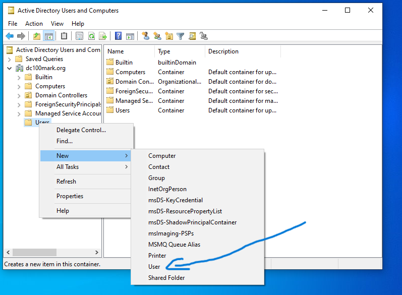
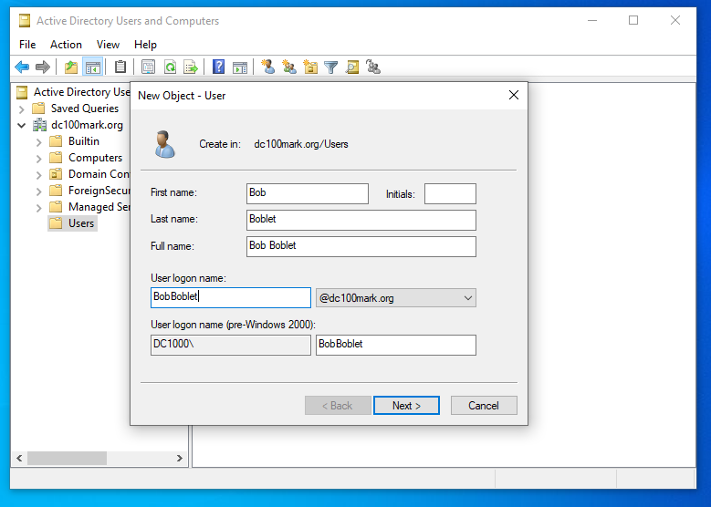
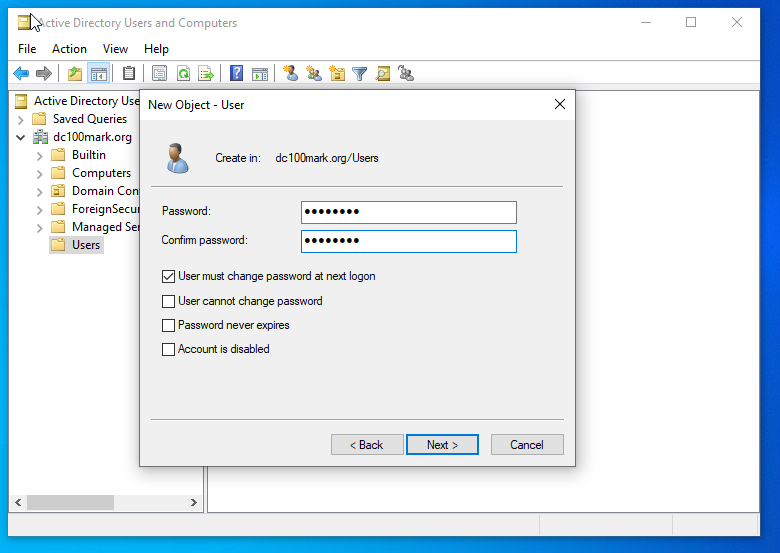
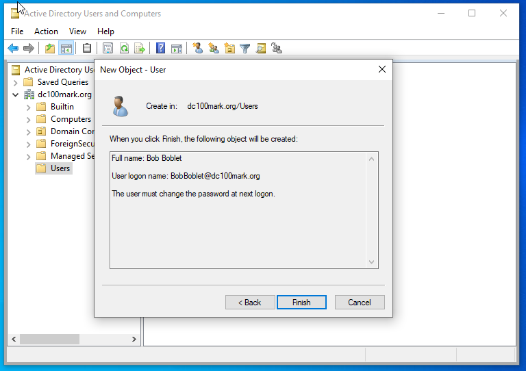
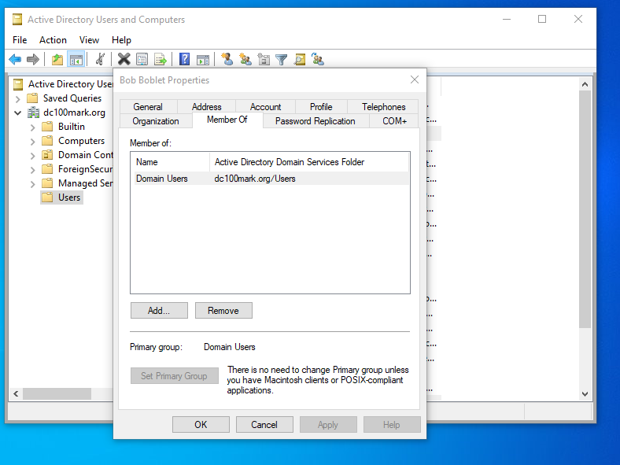

Adding a New User to Active Directory
Prerequisites
You're logged in to a domain-joined machine
Active Directory Users and Computers (ADUC) is installed
Steps:
- In windows searchbar type adm and click Windows Administrative Tools
- Open Active Directory Users and Computers

- click dropdown arrow of the URL (Eg. dc100mark.org)
- right click users folder, then click new -> user

- User's firstname, Lastname and Initials can be entered
- User's login name can also be entered
- click next once completed

- create a temporary password for the user
- ensure that the first box is checked (ie. User must change password at next logon)
- click next once completed

- Review information and click finish

- New Users are automatically added to the Domain Users group
